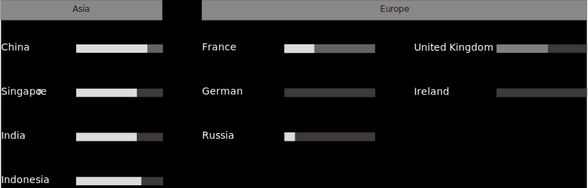
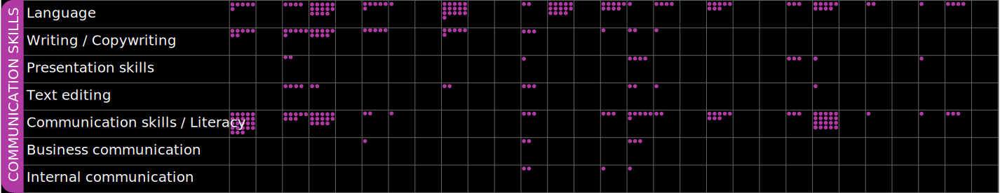
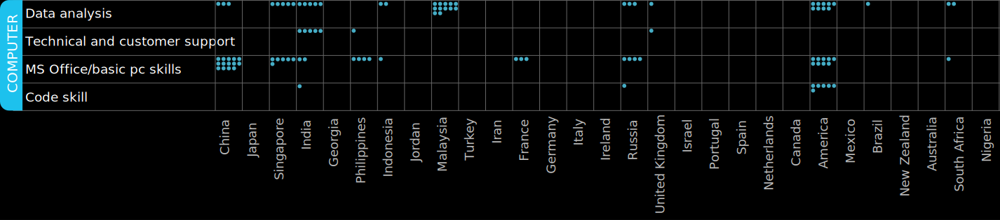
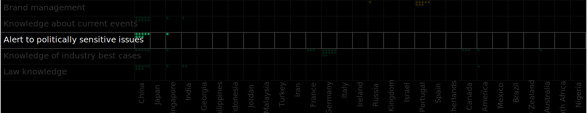

Different countries have different cultural backgrounds, political conditions, and development conditions. The job of content moderators is to review the appropriateness of platform content based on national policies and platform standards. This research question aimed to define the differences within the requirement of the content moderators in different countries through worldwide job sites.
Most European positions do not require a high degree, while content moderators in Asia are generally required to have at least a bachelor's degree.
Communication skills appear most frequently in job descriptions in various countries.
For computer skills, most countries only ask for data analysis or necessary pc skills, but technical skills are also fundamental in the US (e.g., coding).
Only China and Singapore mention “alert to politically sensitive issues” in the job description and the only Singapore job that says this statement is for the Chinese market.
